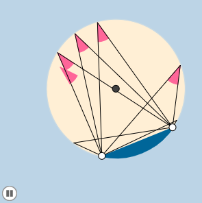

Más Geogebra
Más cosas que se pueden hacer con Geogebra y que no hemos comentado aquí, pero que se pueden ir explorando.
Modo examen
GeoGebra tiene un modo examen que permite a los estudiantes utilizarlo durante los exámenes, restringiendo el acceso a Internet u otros programas instalados en la computadora o dispositivo. De esta forma, es posible utilizar Geogebra en estas pruebas, pero evitando el empleo de otros programas o la propia conexión a Internet. Si el alumno deja la ventana de GeoGebra, se dispara una alerta que puede ser detectada por el profesor y queda documentada en el registro del examen. Enlace al tutorial del equipo de documentación de Geogebra.
Manipulables y animaciones
Una construcción de Geogebra realizada por el profesor, con deslizadores para modificar algún parámetro, puede considerarse ya como un manipulable. Se pueden llegar a hacer auténticas birguerías. Para muestra, tenemos las animaciones de @dynamic_math disponibles en su web http://www.dynamicmathsolutions.com/101-animations:

«Libros» de Geogebra
Muchos de los tutoriales de la wiki de Geogebra están creados, de hecho, con el propio editor de libros Geogebra. Se trata de un formato interactivo que permite integrar texto y applets de Geogebra. Se puede consultar en este enlace.
Para saber más (referencias)
Arnal-Bailera, A. (2013). Mediación tecnológica en la enseñanza y el aprendizaje de Geometría con grupos de riesgo: Estudio múltiple de casos. Tesis doctoral: Universitat Autònoma de Barcelona.
Filloy, E., Puig, L., Rojano, T., & Carrión, V. (2016). Teachers using different methods and Geogebra to solve Arithmetic-Algebraic problems. En _Technology and Its Integration in Mathematics Education (TIME16). _Mexico.
Hohenwarter, M. & Preiner, J. (2007). Dynamic mathematics with GeoGebra. The Journal of Online Mathematics and Its Applications, 7, 1448.
Hohenwarter, J., Hohenwarter, M., & Lavicza, Z. (2009). Introducing dynamic mathematics software to secondary school teachers: The case of GeoGebra. Journal of Computers in Mathematics and Science Teaching, 28(2), 135-146.
Iranzo, N. & Fortuny, J. M. (2009). La influencia conjunta del uso de GeoGebra y lápiz y papel en la adquisición de competencias del alumnado. Enseñanza de las Ciencias, 27(3), 433-446.
Varios autores (2017). Seminario Experiencias de aula con GeoGebra. CIEM, Castro Urdiales. 17-19 de noviembre de 2017.
Varios Autores (2016). Monografía: Uso de geogebra para la enseñanza y el aprendizaje de las matemáticas. UNO, 71.